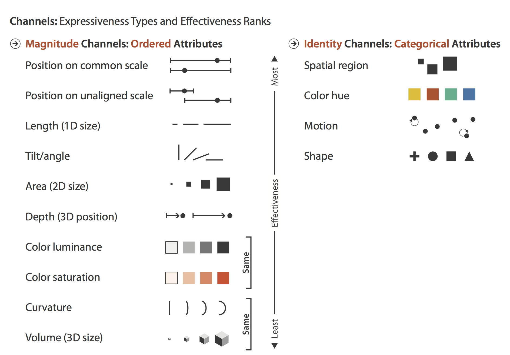
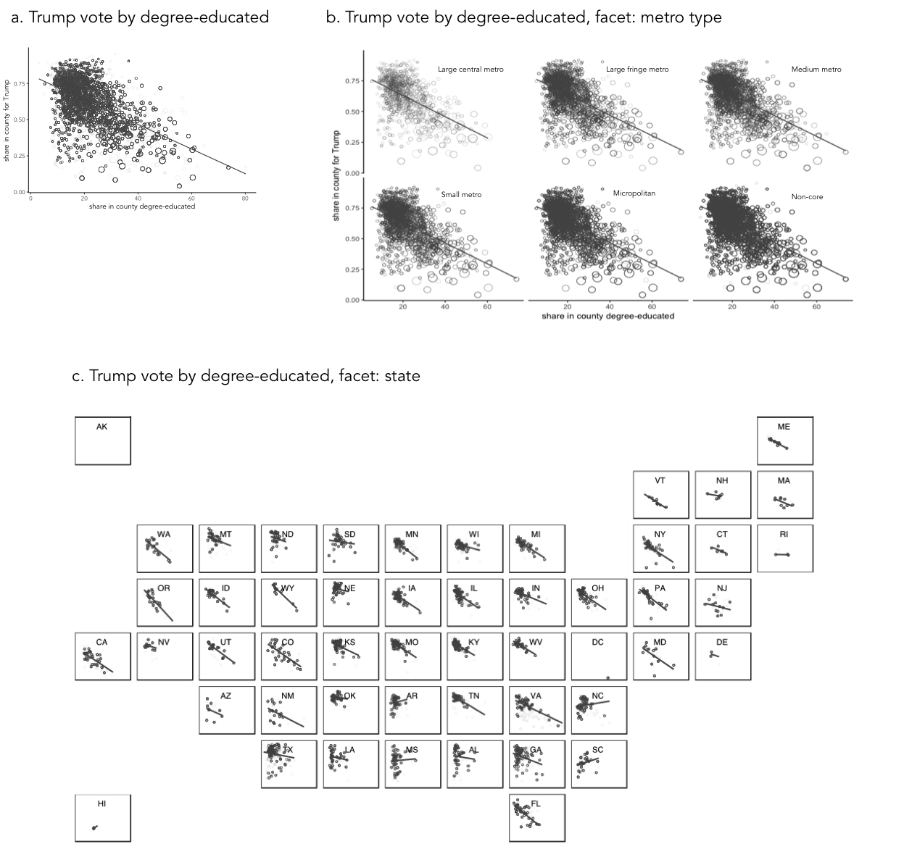
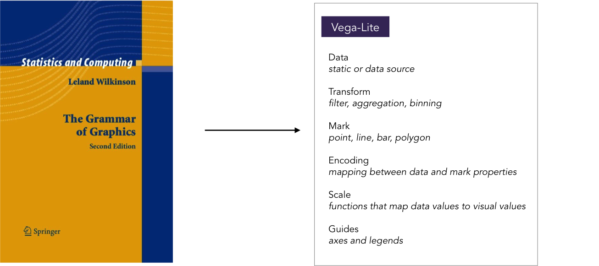

Data Visualization
Although there is a long history of graphics being used to present data, Data Visualization is a reasonably new field. Data graphics are used in different ways by scientists, journalists, designers and many more. Increasingly, Data Visualization is seen as fundamental to modern data analysis — where visual approaches are used to explore structure in large, often repurposed datasets and to communicate that structure and associated uncertainty information. Tools for creating data visualizations vary from low-level programming environments that offer immense flexibility (e.g. Processing) to higher level frameworks aimed to support rapid generation of (re-configurable) graphics (e.g. Vega-Lite). In this session, you’ll be exploring this latter category.
There is a large literature that you may wish to consider defining visualization and providing guidelines on good visualization design (a set of primers appears in the reference list). However, effective data graphics typically have the following characteristics:
-
Represent complex datasets graphically that could not be as effectively represented via other means.
-
Are data rich: present many numbers in a small space.
-
Encourage connections and comparisons between data items.
-
Reveal patterns at several levels of detail: from broad overview to fine structure.
-
De-emphasise non-data items and omit redundant information.
Considering these characteristics, take a look at the data graphics below, which present results data from the 2016 US Presidential Election. Use the links to read the full stories (and data analyses) that accompany the graphics.

Both maps use 2016 county-level results data, but the The Washington Post graphic graphic encodes many more data items than the Medium post (see table below). It is not simply the data density that makes the Washington Post graphic successful. The authors carefully incorporated annotations and transformations in order to support comparison and emphasise structure. By varying the height of triangles according to the number of votes cast, the thickness according to whether or not the result for Trump/Clinton was a landslide and rotating the scrollable map 90 degrees, the very obvious differences between metropolitan, densely populated coastal counties that voted emphatically for Clinton and the vast number of suburban, provincial town and rural counties (everywhere else) that voted Trump, were exposed.
| Data item | Washington Post | Medium |
|---|---|---|
County location |
||
County result |
||
State result |
||
County votes cast (~pop size) |
||
County result margin |
||
County result landslide |
Describing, evaluating and creating data graphics
Data graphics visually display measured quantities by means of the combined use of points, lines, a coordinate system, numbers, symbols, words, shading, and color.
1983
In the Washinton Post piece, we saw a judicious mapping of data to visuals, underpinned by a careful understanding of analysis context. Information Visualization — an academic discipline devoted to the study of data graphics — provides a language for describing this process as well as empirically-informed guidelines to support design choices.
Description and evaluation
In her influential book Visualization Analysis and Design, Tamara Munzner enumerates commonly used visual marks — geometric primitives such as points, lines and areas — and visual channels that determine how marks appear (presented in Figure 2).
When creating data graphics, we specify a mapping of data items to visual channels. Some visual channels are more appropriate at showing certain data types than others. Munzner (2014) differentiates channels that are appropriate for representing categorical attributes from those appropriate for ordered and quantitative attributes. Notice also that Munzner ranks these visual channels according to their effectiveness. We’ll skip the details for now, but this is an empirically-derived ordering based on decades of perception-based research in Information Visualization (Cleveland & McGill 1984 ; Heer & Bostock 2010) — we are confident it is correct.

Description and evaluation: example of the scatterplot
As an example of how we might map data attributes to visual channels in a graphic, let’s consider a familiar example of a scatterplot constructed to analyse the 2016 US election dataset.
When presenting data in a scatterplot, we usually mark observations using points. These points are typically mapped to at least one visual channel: position on the x-axis (the proportion of people in a US county with degrees) and on the y-axis (the proportion of voters in a US county supporting Trump). If we so wished, it would also be possible to vary the area of points according to something meaningful — for example, a county’s population size (Figure 3a).
The attributes so far describe quantities. If an attribute existed that described US counties in some other way (whether a county was rural, provincial town or big city), those categories could be distinguished by perhaps faceting the scatterplot to create separate versions of the plots for each category of county (Figure 3b). Considering Munzner’s (2014) ordering, we may wish to use containment within spatial region (look back to Figure 2) as a visual channel. For Munzner, spatial region describes the arrangement of small multiples in a display — this arrangement is not necessarily a geo-spatial one. However, US states are also a useful category to facet on and can clearly be arranged using containment. If we are to facet to form individual scatterplots for each state, it makes sense to arrange the small multiples according to their approximate spatial position rather than some arbitrary ordering (Figure 3b).

Notice that in this example of mappings, I am paying attention to the types of attributes that I wish to encode, importance to my analysis and the effectiveness of visual channels at representing those attributes. The main purpose is to explore the possible association between levels of education in a county and that county’s preference for Trump. I am using position on a common scale — the most effective visual channel — for encoding these quantities. The focus on county size (number of votes) is a secondary one, so I relegate this quantity to the area channel. And the county-type (urban-rural) is a categorical attribute and so I map this to the spatial region channel. As political/administrative entities, states are categorically distinct; however, they can be ordered according to their spatial position and so the careful use of ordering within spatial region in Figure 3c.
|
Arrangement or layout into spatial region is an important property to consider when designing data graphics. In Figure 3a and 3b, a scatterplot is faceted to form small multiples — a series of charts that share the same scale and axes and arranged for easy comparison. Notice that when faceted on state, the scatterplots are arranged according to their approximate geographic position. There is a large literature on how to effect semi-geographic arrangements. Meulemans et al. (2017) provides an overview and suggests an interesting and elegant approach. |
Description and creation: the grammar of graphics (and Vega-Lite)
Describing graphics in abstract terms, as with the scatterplots above and previously the Washington Post map, is useful not only for comparison of designs. Such abstract descriptions force careful consideration of the data and visual channels available and the comparisons that mappings should support: they encourage good design.
In the late 1990s, the Computer Scientist and Statistician Leland Wilkinson introduced the Grammar of Graphics — a framework for coherently and consistently describing data graphics. Wilkinson’s grammar separates a chart into a series of layers: data (clearly), transformations on that data (filters, various aggregations and binning procedures), visual marks used to represent data, a scaling that is applied when mapping data to marks (e.g. linear, log or square root) and a coordinate system (e.g. Cartesian, Polar, map projection). Once expressed in these terms, visualization design is a case of combining layers in different ways, but under a helpfully narrow vocabulary.
The Grammar of Graphics has been extremely influential in the design of high-level frameworks and technologies for visual data analysis. Tableau is underpinned by the Grammmar of Graphics; ggplot2 is a very direct implementation of Wilkinson’s theory and Vega-Lite combines a similar implementation to ggplot2, but is native to the web and, as of version 2.0, with a grammar of interaction.
The rest of the session is devoted to Vega-Lite. You will learn a little of Vega-Lite’s grammar in order to write specifications from which data graphics for the web are generated.

Session activity: creating data graphics for the web using Vega-Lite
Officially released in late 2017, Vega-Lite (2.0) is a visualization toolkit that allows users to rapidly create and configure data graphics for the web. These graphics are generated from high-level specifications that describe mappings of data to graphical marks. Vega-Lite then automatically generates axes, legends, scales and other aspects of graphics using principles of good visualization design. The specifications are written in JSON. A consequence of the higher-level syntax is some loss of flexibility from specifications developed in, for example, d3. However, the aim is rapid generation of graphics to support the workflows of data analysts.
You may wish to spend some time on the homepages for Vega-Lite. Try exploring some example specifications in the online editor. This OpenVis Conf talk also provides a useful overview and background.

|
You may find it at first tedious curating JSON files that contain your Vega-Lite specifications. JSON requires a particular syntax and is difficult to debug. Wrappers for Vega-Lite have already been developed (e.g. elm-vega, altair) and this activity is likely to increase as Vega-Lite becomes more widely adopted — this already looks very likely! Despite the frustration, Vega-Lite specifications in themselves are coherent, descriptive and reproducible. There are benefits to creating graphics through code. If something doesn’t work, you can work out the error, fix things, and re-run. Since Vega-Lite’s is a small vocabulary framework, you will often end up re-using (and minimally adjusting) specifications to reveal different aspects of a dataset’s structure. It is worth remembering that there is a common flow to Vega-Lite specifications. You start with some data, identify the marks that you wish to map data to, and then specify details of this encoding. Once you familiarise yourself with this way of describing graphics, the specifications become much easier to generate — even the more involved specifications that encode interaction (by parameterising the selections object). The detail around how individual shapes are rendered on the screen, how mouse events are handled and the translation of those events to screen coordinates and then data items, is taken care of for you. Your concern is instead with the data items you wish to represent, the high-level mappings and combinations of views that you wish to use to support comparison — in other words, aspects that are most important and relevant to your analysis! |
Optional activity
If you are exhausted by the political events of 2016, you may wish to explore other data — maybe some relating to your own research domain. I’ve made available some data, a template and some example graphics and specifications describing London house prices (ratio of median prices-to-earnings).
Portfolio activity
Further reading
-
Meyer, M. & Fisher, D. (2018) Making Data Visual, O’Reilly. I’ve only read a sample chapter, but it’s written by highly respected InfoVis profs and has a great ambition: If you’re a data scientist trying to navigate the murky space between data and insight, this practical book shows you how to make sense of your data through high-level questions, well-defined data analysis tasks, and visualizations to clarify understanding and gain insights along the way.
-
Munzner, T. (2014) Visualization Analysis & Design, CRC Press. Tamara Munzner, Professor of Information Visualization at University of British Columbia, provides a systematic and empirically-grounded framework for thinking about visualization. Available as an e-book via the University of Leeds Library. Chapters 2 and 5 are worth special consideration.
-
Satyanarayan, A., Moritz, D., Wongsuphasawat, K. and Heer, J. (2017) Vega-Lite: A Grammar of Interactive Graphics. IEEE Transactions on Visualization & Computer Graphics, 23(1): 341-150. The paper on which Vega-Lite (
2.0) is based. This is a reasonably accessible read and won best paper at (IEEE VIS — the most prestigious venue for data visualization.
References
-
Cleveland, W. & McGill, R. (1984) Graphical Perception: Theory, Experimentation, and Application to the Development of Graphical Methods. Journal of the American Statistical Association, 79(387): 532—554.
-
Heer, J. & Bostock, M. (2010) Crowdsourcing graphical perception: Using Mechanical Turk to assess visualization design, Proceedings of the SIGCHI Conference on Human Factors in Computing Systems, pp. 203—212.
-
Munzner, T. (2014) Visualization Analysis & Design, CRC Press.
Miscellany
Two marks were used (lines and triangles) |
|
Colour hue (a categorical channel) was mapped to a categorical attribute |
|
Orientation (a quantitative channel) was mapped to a quantitative attribute (change in margin size) |
|
Length (a quantitative channel) was mapped to quantitative attributes (number votes, size of margin) |
|


Content by Roger Beecham | 2018 | Licensed under Creative Commons BY 4.0.